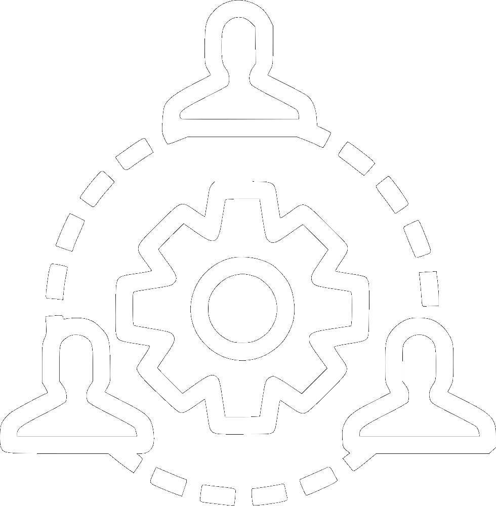
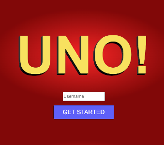

ABOUT ME
 DETAILED
DETAILED
I stay focused in my work and I am attentive to details.
 TIME
TIME
I am a quick learner, with great time and task management.

TEAM PLAYER
I love to work with others. I believe communication is key.

FULL STACK
I have experience in many languages, frameworks, and libraries.
Front-End Languages & Frameworks
Back-End Languages & Frameworks
MY WORK

UNO - Websockets

Zion Wildflower - Mobile PWA

Zion Dashboard - Desktop
Zion VEM - Mobile PWA
Uno
A Websockets Project
Uno, was a fun class project during my Junior year. The game was my own idea to build, with the requirement to make a websocket application. The focus wasn't as much on the UI, but the constant use of websockets. Wether a player was to send a message to an opponent, draw a card, or play a card, websockets would process the action and display it to the other user in a variety of ways.